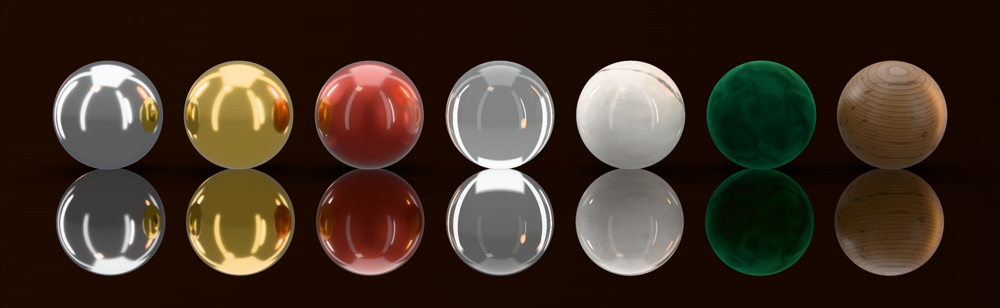
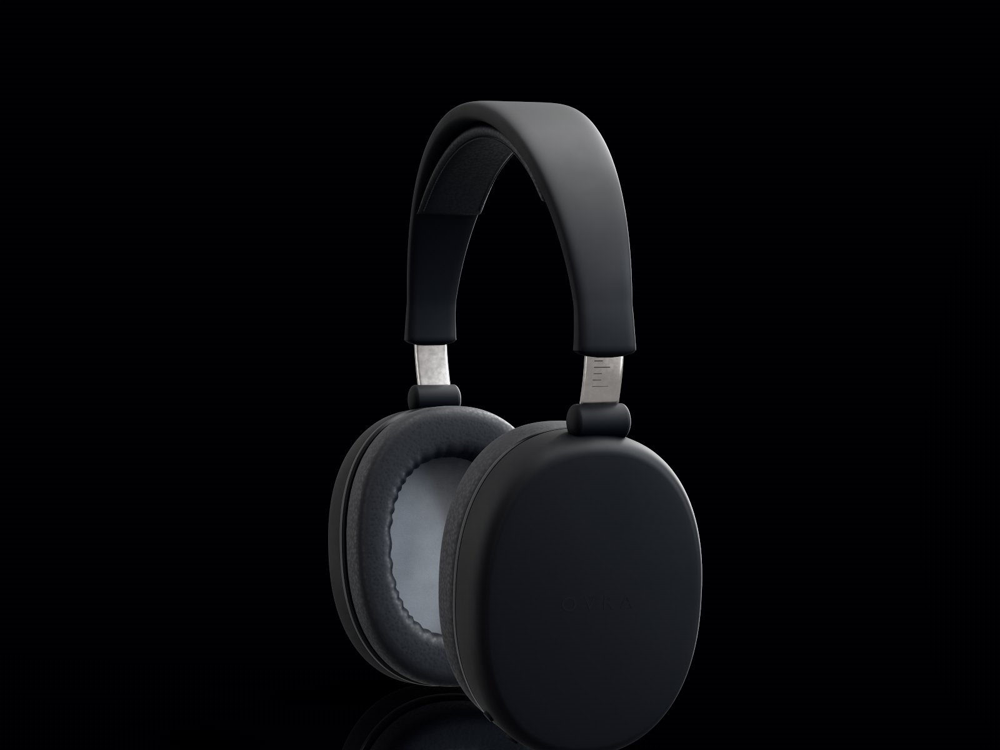
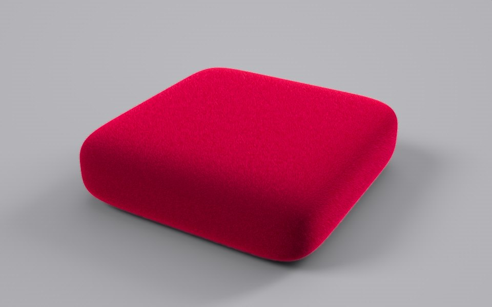
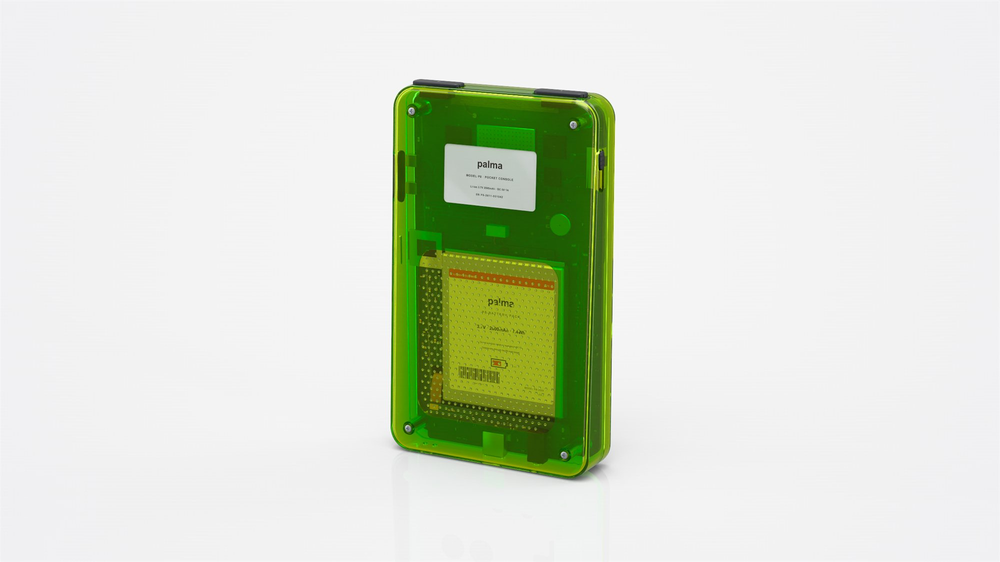
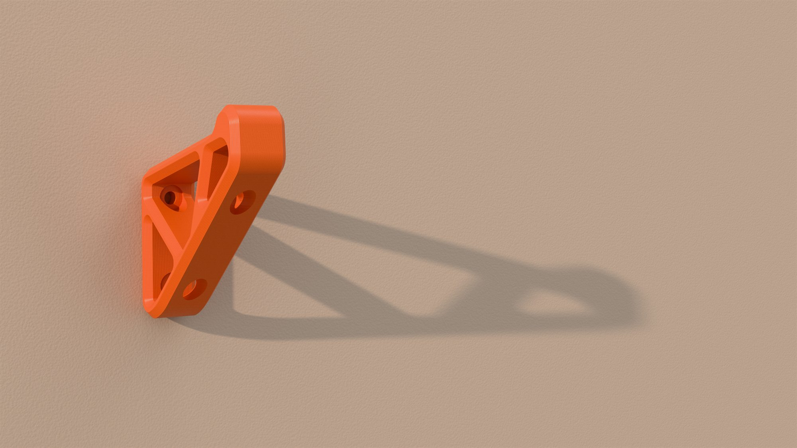
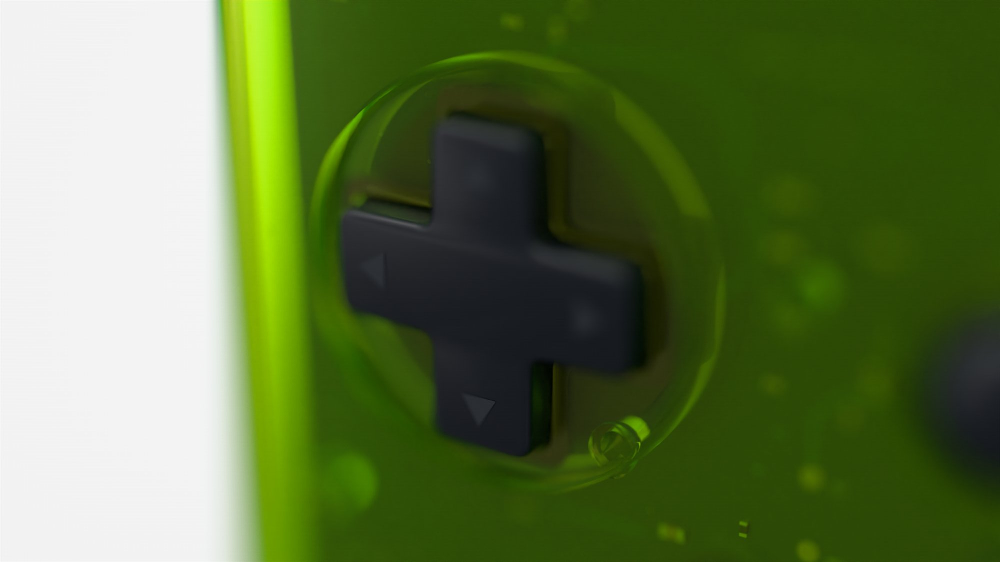

Gallery
Rendered in Tequila.
From the sample scenes that come with Tequila and its material library. Click a picture to see it full size. Made something? Share it on the Discord.
















